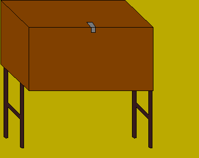

Patrol Cooking Method
Patrols are small groups of scouts that make up a troop. Patrols typically have 4 to 6 members, a name, logo,
and patrol yell. Each patrol also has its own "patrol box." The patrol boxes contain everything needed to
prepare a meal. The scouts use these boxes to make meals for their patrol. Each patrol designates two cooks
for each meal, while two more take care of clean up. Below is a basic list of what can be found inside a patrol
box:
- stove
- lantern
- propane tank
- matches
- pots and pans
- cooking utensils
- tin foil
- wash tub
- dish soap
- rags
It is the responsibility of the patrol to keep everything inside the box clean and undamaged. This includes
washing all the pots, serving utensils, and the stove. Also, everything must be stacked and placed in the box
neatly. If anything is damaged, the patrol leader reports it to the Quartermaster.
Patrol cooking is both fun and a learning experience. During the meeting preceding the campout, each patrol
comes up with a menu. Once they have the menu completed, they assign volunteers to go shopping on the
Thursday before the campout. They are only allowed to spend a certain amount, so they must try to look for
bargains and low prices. Once the food is purchased, the scouts return to the scout shed and store the food
in coolers and boxes. On the night the troop departs for camp, the boxes and coolers are packed into the
scout trailer, along with tents, tarps, and other gear. When we arrive at the camping ground, the trailer
is unpacked. The patrol boxs are equipped with two legs on each side, so they can be stood upright about 3 feet
off the ground. The lid folds down, acting as a kitchen counter. .
When mealtime arrives, the cooks will open the patrol box, and set the stove on the unfolded lid. The stove will be
connected to the propane tank, and can now be lit. When the meal is done cooking, paper towels are placed over the pots,
everyone is called to the area, and a prayer is said. The cooks will be the first to be served, then the rest of the patrol.
When the meal is over, the clean up crew warms up some hot water. The patrol box has 2 tubs for cleaning. Hot
water and dish soap go into one tub, while cold water goes into the other. One scout washes the dishes in the
hot, soapy water while the other scout rinses the dishes in the cold water, and dries it with a towel.
Everything is placed back exactly as it was found.
[Return Home]